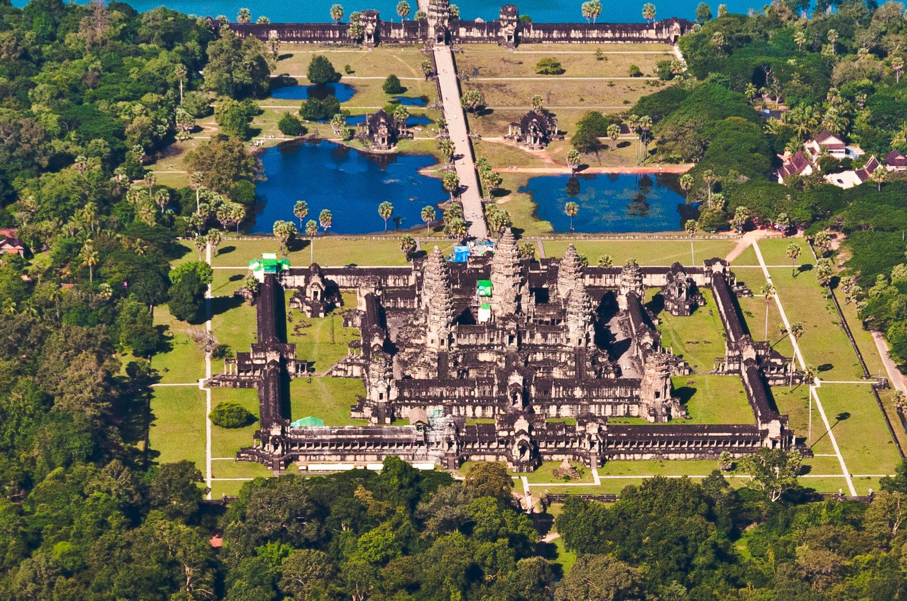
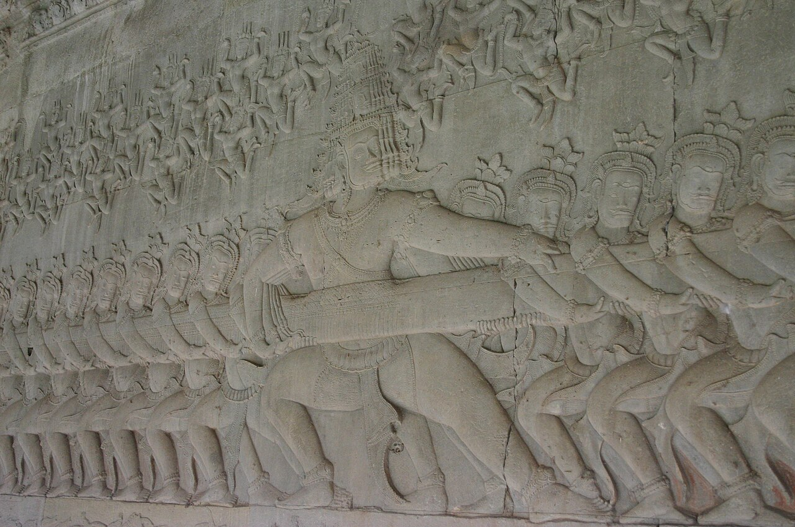

Day 5물 위에 세운 제국 — 앙코르와트는 왜 서쪽을 바라볼까
오늘의 질문: 앙코르와트는 왜 서쪽을 바라보고, 앙코르를 "물 위에 세운 제국"이라 부를 만한 까닭은 무엇일까요?읽는 시간 약 10분·역사
- 앙코르와트는 12세기 전반 수리야바르만 2세가 세운 사원이에요. 처음엔 비슈누를 중심으로 모신 힌두 사원이었고, 뒤에 불교 사원으로 이어졌어요.
- 대부분의 크메르 사원은 동쪽을 보는데 앙코르와트는 서쪽을 봐요. 왜인지는 장례 사원설, 비슈누설 등 견해가 여럿이고 아직 정해지지 않았어요 논쟁 있음.
- 앙코르의 서바라이(인공 저수지)는 여의도(제방 안쪽 기준) 5~6개 넓이예요 추정. 그 물이 논에 쓰였는지 상징이었는지는 아직 논쟁이에요 논쟁 있음.
표시가 없는 숫자는 확인된 값이에요. 자료마다 다르거나 어림한 값에만 추정·논쟁 있음을 붙였어요.
어제 퀴즈 정답 1번 O · 2번 ② · 3번은 단톡방에서 이야기해요
카드로 보기
카드를 누르면 크게 볼 수 있어요.


하늘에서 내려다본 네모난 물
비행기 창밖으로 시엠립 근처 땅을 내려다본다고 상상해 보세요. 네모반듯한 물의 띠가 액자처럼 사원을 두르고, 그 한가운데 탑들이 솟아 있어요. 국기 속 그 사원, 앙코르와트예요. 그런데 사원으로 들어가는 긴 길은 해가 뜨는 동쪽이 아니라 해가 지는 서쪽에 나 있어요.

사원을 두른 물의 띠는 해자(성이나 사원 둘레에 판 물길)로, 폭이 약 190m예요 추정. 오늘은 두 질문을 따라가요. 이 사원은 왜 서쪽을 바라볼까, 그리고 앙코르는 왜 "물 위에 세운 제국"이라 부를 만할까.
"물 위에 세운"은 비유예요. 도시가 물에 떠 있었다는 뜻이 아니라, 거대한 인공 저수지와 물길이 이 도시의 큰 특징이었다는 뜻이에요.
산 위의 즉위 의례에서 시작된 이야기
Day 3에서 진랍까지 따라왔다면, 이야기는 802년 무렵으로 이어져요. 크메르 왕 자야바르만 2세가 프놈 쿨렌이라는 산에서 즉위 의례를 치르고 앙코르 시대를 열었다고 전해져요 논쟁 있음. 다만 이 일을 알려 주는 거의 유일한 기록은 약 250년 뒤인 11세기 중반에 새긴 비문(돌에 새긴 글)이에요. 이 비문은 '데바라자' 의례를 전하는데, '신왕'이나 '신들의 왕', 신상 의례로 보는 등 해석이 갈려요 논쟁 있음.
저수지일까, 땅 위에 옮긴 바다일까
앙코르의 왕들은 둑을 쌓아 바라이(거대한 직사각형 인공 저수지)를 만들었어요. 도시 동쪽에는 동바라이, 서쪽에는 그보다 큰 서바라이가 있어요. 서바라이는 넓이가 여의도(제방 안쪽 약 2.9㎢ 기준) 5~6개만 해요 추정. 다만 여의도는 강 위의 섬이고 바라이는 평균 깊이 약 4m의 네모난 물그릇이라, 넓이만 빌려 온 비유예요.
그런데 이 물그릇이 무엇을 위한 것이었는지는 아직 논쟁이에요. 건기에 쓸 물을 모아 논에 댔다는 견해도, 힌두 우주의 바다를 땅에 옮긴 상징이었다는 견해도, 둘 다였다는 견해도 있어요 논쟁 있음. 1950년대에 한 프랑스 연구자가 앙코르를 거대한 물 관리 도시로 보는 가설을 내놓은 뒤로 이 논쟁이 이어져 왔어요 논쟁 있음.
2012년에는 LiDAR(라이다, 하늘에서 레이저를 쏘아 땅의 높낮이를 재는 측량) 조사가 새 단서를 보탰어요. 앙코르의 도시 중심부는 13세기 무렵 성벽 도시 앙코르톰 안보다 몇 배 넓었고, 그 바깥으로 집이 드문드문한 도시 지역이 서울보다 넓게 펼쳐져 있었다는 사실이 드러났어요. 이 지도는 물 관리 도시 가설의 일부를 뒷받침했지만, 물이 실제로 농사에 얼마나 쓰였는지는 여전히 논쟁이에요 논쟁 있음.
2021년 연구는 13세기 정점에 약 3,000㎢(서울의 약 5배) 일대에 약 70만~90만 명이 살았다고 추정해요 추정.
| 연도 | 일 | 확신도 |
|---|---|---|
| 802년 무렵 | 자야바르만 2세의 즉위 의례, 앙코르 시대의 시작(약 250년 뒤 비문의 기록) | 논쟁 있음 |
| 900년경 | 야소바르만 왕 때 동바라이를 만듦 | 추정 |
| 11세기 | 수리야바르만 1세 때 서바라이를 만들기 시작(우다야디티야바르만 2세 때 완성) | 추정 |
| 1113년경~1150년경 | 수리야바르만 2세 재위, 앙코르와트를 세움 | 확실 |
| 1431년 무렵 | 앙코르 시대의 끝으로 보통 잡는 해 | 추정 |
| 1992년 | 앙코르 유적이 유네스코 세계유산에 오름 | 확실 |
신들의 산을 돌로 옮긴 사원
앙코르와트는 12세기 전반, 수리야바르만 2세(재위 1113년경~1150년경)가 세웠어요. 수십 년에 걸쳐 지었다고 알려져 있는데, 착공과 완공 연도는 자료마다 달라요 논쟁 있음. 같은 12세기, 고려에서는 인종 때 김부식 등이 『삼국사기』를 편찬하고 있었어요. 두 나라가 오갔다는 뜻은 아니고, 시대를 가늠하는 눈금으로만 빌려 온 비교예요.
처음 이 사원은 힌두교의 신 비슈누를 중심으로 모신 힌두 사원이었어요. 다른 신도 함께 모셨다는 설명도 있어요.
이 사원은 시대에 따라 다른 신앙을 담아 왔어요. 시간이 지나며 불교 사원으로 이어졌고, 그 시점은 12세기 말로 보는 자료도, 13~14세기로 보는 자료도 있어요 논쟁 있음. 지금도 스님과 불교 신자들이 찾는 곳으로 알려져요 추정.
한가운데 솟은 탑 다섯 개는 힌두 신화에서 신들이 사는 산, 메루산의 봉우리를 본뜬 것으로 해석돼요. Day 1에서 본 국기에는 정면에서 본 앙코르와트가 탑 세 개로 그려져 있었죠. 위에서 내려다본 그림 1에서는 몇 개가 보이는지 세어 보세요.
기네스 세계 기록은 부지 넓이 약 163ha(여의도의 절반쯤)를 기준으로 앙코르와트를 가장 큰 종교 건축물로 꼽아요.
벽을 따라 걷는 이야기
어제 만난 압사라처럼, 동쪽 회랑(지붕을 덮은 긴 복도)에도 「우유 바다 휘젓기」 부조(벽면에 도드라지게 새긴 조각)가 있어요. 신들과 아수라(신들의 맞수)가 거대한 뱀을 양쪽에서 줄다리기하듯 당기는 힌두 신화의 장면이에요.

앙코르와트는 왜 서쪽을 바라볼까
대부분의 크메르 사원은 동쪽을 향하는데, 앙코르와트는 서쪽을 봐요. 왜 그런지는 학자마다 달라요 논쟁 있음.
널리 소개되는 설명은 수리야바르만 2세의 장례 사원으로 지었다는 견해예요(모리스 글레즈와 조르주 세데스 제안). 이 견해에는 서쪽을 해가 지는 방향, 곧 죽음과 이어 보는 풀이가 따라와요 추정. 다만 왕이 실제로 이곳에 묻혔는지는 자료마다 달라요 논쟁 있음.
다른 설명도 있어요. 비슈누가 서쪽과 이어져 있어서, 비슈누를 모신 사원이 서쪽을 본다는 견해예요(프리먼과 자크 제안). 이 연구자들은 앙코르의 다른 사원 몇 곳도 동쪽을 보지 않는다고 짚어요. 한 가지로 정해지지 않았으니, 현지에서 다른 설명을 들으면 귀 기울여 보면 좋겠어요.
늘 그 자리에 있던 사원
앙코르 시대의 끝은 보통 1431년 무렵으로 잡지만, 쇠퇴의 원인은 아직 정해지지 않았어요 논쟁 있음. 하지만 앙코르는 잊힌 적이 없어요. 크메르 사람들은 앙코르와트를 기억하고 이야기로 전해 왔고, 16세기 말에도 외국인이 찾아온 기록이 있어요.
17세기에는 일본 불교 순례자들이 크메르 새해를 이곳에서 지냈다는 기록도 남아 있어요. 19세기 프랑스 박물학자 앙리 무오의 여행기는 서양에 앙코르를 널리 알린 계기였을 뿐이에요.
1992년에는 앙코르와트를 포함한 앙코르 유적군이 유네스코 세계유산에 올랐어요. 9~15세기에 지은 사원 수백 개가 남아 있는 곳이에요. 같은 해 '위험에 처한 세계유산' 목록에도 함께 올랐다가 2004년에 벗어났어요.
그래서 "물 위에 세운 제국"은, 바라이가 논에 댈 물이었든 상징이었든 물이 앙코르의 도시 설계에서 중심이었다는 뜻으로 읽어 볼 수 있어요. 서쪽을 바라보는 이유도, 물그릇의 쓰임도 학자들은 지금도 묻고 있어요.
| 항목 | 내용 | 확신도 | 출처 |
|---|---|---|---|
| 근거 비문 | 802년 무렵의 즉위 의례를 약 250년 뒤인 11세기 중반(1052년 또는 1053년) 비문이 전함. '데바라자' 해석은 갈림 | 후대 기록 확실, 비문 연도·해석 논쟁 있음 | Wikipedia Jayavarman II·Sdok Kak Thom |
| 서바라이 | 약 7.8×2.1㎞(약 16㎢) = 여의도(제방 안쪽 2.9㎢ 기준) 5~6개. 평균 깊이 약 4m | 추정 | Wikipedia West Baray, 한국민족문화대백과 「여의도」 |
| LiDAR 조사(2012년) | 13세기 도시 중심부 최소 35㎢(앙코르톰 성벽 안 9㎢의 약 4배), 낮은 밀도의 도시 지역 약 1,000㎢(서울 605㎢의 약 1.7배) | 확실 | PNAS 2013, 서울특별시 |
| 인구 | 13세기 정점, 그레이터 앙코르 약 3,000㎢(서울의 약 5배) 일대 약 70만~90만 명(2021년 연구) | 추정 | EurekAlert, 서울특별시 |
| 앙코르와트를 세운 왕 | 12세기 전반 수리야바르만 2세(재위 1113년경~1150년경). 같은 12세기 고려 인종(재위 1122~1146) 때 『삼국사기』 편찬(1135~1145년 사이) | 확실 | 한국문화재재단, Wikipedia, National Geographic, 한국민족문화대백과 「인종」 |
| 처음 모신 신과 탑 | 비슈누를 중심으로 모신 힌두 사원. 중앙 탑 5개(메루산 봉우리로 해석) | 확실 | Wikipedia Angkor Wat |
| 크기 | 부지 162.6ha(약 1.6㎢, 여의도의 약 0.56배), 기네스 세계 기록 '가장 큰 종교 건축물'. 해자 폭 약 190m | 부지·기네스 확실, 해자 추정 | Guinness World Records, Wikipedia Angkor Wat |
| 바라보는 방향 | 서쪽(대부분의 크메르 사원은 동쪽). 이유는 장례 사원설, 비슈누설 등 견해가 여럿 | 서향 확실, 이유 논쟁 있음 | Wikipedia Angkor Wat·Suryavarman II, National Geographic |
| 바깥에 남은 기록 | 16세기 말(1586년) 외국인 방문, 17세기(1632년) 일본 순례자, 19세기(1860년) 무오의 여행기 | 추정 | Wikipedia Angkor Wat, Cultural Survival |
| 세계유산 | 1992년 앙코르 유적군 등재, 같은 해 위험 유산 목록(2004년 해제). 9~15세기 사원 수백 개 | 확실 | UNESCO, 국가유산청 |
프놈펜에서 만나면
- 오늘 바로: 국기와 사진 속 탑 세어 보기. 앙코르와트는 프놈펜에서 직선 약 235㎞ 떨어져 있어요 추정. 대신 오늘은 국기와 그림 1의 탑을 세어 단톡방에 올려 봐요.
- "왓"이 붙은 이름은 사원이에요. 크메르어 វត្ត(웟, 불교 사원)은 사원 이름에 붙어요. 프놈펜에서 '왓 ○○'라는 이름을 보면 불교 사원이라고 생각하면 돼요. 앙코르와트의 "와트"도 같은 말이에요.
- 다른 설명을 만나면 먼저 물어보기. 서향의 까닭을 현지에서 다르게 듣는다면, 맞고 틀림을 가리기보다 그 설명을 더 들어 보세요. 우리 제작팀의 권고예요.
오늘의 크메르어 한마디
អង្គរវត្ត
Angkor Wat (위키낱말사전 전사: ʼɑngkɔɔ vŏət)
앙꺼 웟
앙코르와트를 캄보디아 사람들이 부르는 이름이에요. អង្គរ(앙꺼, 도시)와 វត្ត(웟, 사원)을 합친 말이라 '사원의 도시'쯤으로 풀 수 있어요.
한국에서 부르는 "앙코르와트"와 소리가 꽤 달라요. 소리는 한글 줄을 기준으로 읽으면 돼요.
철자는 크메르어 위키백과와 위키낱말사전(Wiktionary) 표기를 따랐어요. 한글 발음은 근사치라 추정이에요.
오늘의 퀴즈
- OX앙코르와트가 서쪽을 보는 이유는 학자들이 하나로 합의한 설명이 있어요. (O / X)
- 객관식앙코르와트를 세운 왕과 시기로 맞는 것은?
- ① 자야바르만 2세, 9세기
- ② 수리야바르만 2세, 12세기
- ③ 수리야바르만 2세, 9세기
- ④ 자야바르만 2세, 15세기
- 생각해 볼 질문정답은 없어요. 현지 친구가 앙코르와트가 서쪽을 보는 이유를 오늘 읽은 것과 다르게 들려준다면, 어떤 질문을 건네 보고 싶나요?
정답은 이 쪽 맨 끝에 있어요
더 알아보기
- 내일(Day 6): 「바욘 사원의 수많은 미소, 그 주인공은 누구일까 — 자야바르만 7세」. 오늘 이름만 스친 앙코르의 또 다른 왕과, 바욘 사원의 수많은 미소를 만나요.
- 한국어 기사: 국가유산청 월간국가유산사랑, 앙코르와트 '보수 정비 신화' 대한민국이 만들어 갑니다 (KO)
- 바라이가 농사용이었는지 더 궁금하다면: Virtual Angkor, Water & Climate (EN)
- 레이저로 그린 앙코르 지도를 직접 보고 싶다면: PNAS, Uncovering archaeological landscapes at Angkor using lidar (EN)
확신도 표시 범례
- 확실 공신력 있는 출처 둘 이상이 일치하거나, 헌법·공식 통계 같은 1차 자료로 확인한 내용. 본문에서는 따로 표시하지 않고 표 1·2에 적었어요.
- 추정 믿을 만하지만 2차 자료나 추계에 기대고 있어, 자료나 시점에 따라 달라질 수 있는 내용
- 논쟁 있음 출처끼리 수치나 해석이 갈려 범위로 쓰거나 여러 견해를 함께 소개한 내용
퀴즈 정답
눌러서 정답 보기
1번 X. 서쪽을 본다는 것 자체는 확실하지만, 그 이유는 장례 사원설과 비슈누설 등 견해가 여럿이고 아직 정해지지 않았어요. 하나의 정답이 있을 것 같은 질문이라 O를 고르기 쉬워요. 「앙코르와트는 왜 서쪽을 바라볼까」 첫 문단부터 나와요.
2번 ②. 앙코르와트는 12세기 전반 수리야바르만 2세(재위 1113년경~1150년경)가 세웠어요. 왕 이름이 비슷해서 헷갈리기 쉬워요. 자야바르만 2세는 그보다 앞서 802년 무렵 앙코르 시대를 열었다고 전해지는 왕이에요. 「신들의 산을 돌로 옮긴 사원」 첫 문단에 나와요.
3번 정답 없음. 학자들도 서향의 이유를 하나로 정하지 못했어요. "그 이야기, 더 들려줄 수 있어요?"처럼 상대의 설명을 더 듣는 질문이면 무엇이든 좋아요. 단톡방에서 이야기해 봐요.